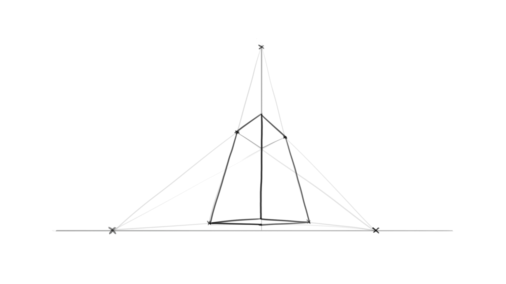

Perspektivisches Zeichnen 2
Einleitung
Wir haben uns im Kapitel: Perspektivisches Zeichnen I angeschaut, was unter der Perspektive genau gemeint war und wie man diese mit einem Fluchtpunkt umsetzt. Neben der 1-Punkt-Perspektive gibt es auch noch die 2-Punkt- und 3-Punkt-Perspektive und wie der Name schon sagt, gibt es hier mehr Fluchtpunkte.
Ausschnit der 2-Punkt-Perspektive
Ausschnit der 3-Punkt-Perspektive
Verständnis
Wie die Zahl vorne schon sagt, werden hier jeweils zwei bzw. drei Fluchtpunkte eingesetzt.
Die 2-Punkt-Perspektive verwendet zwei Punkte auf der Horizontlinie,
die meistens einen großen Abstand zueinander haben.
Alle vertikalen Linien bleiben gleich und parallel zueinander.
Die Fluchtlinien links davon gehen zum linken Fluchtpunkt, genauso die rechten Linien zum rechten Punkt.
Mit diesem Wissen können wir nun die Objekte aus der 1-Punkt-Perspektive auch in die 2-Punkt-Perspektive bringen.
Animation - 2-Punkt-Perspektive
Zusammenfassung
Die 3-Punkt Perspektive bringt einen dritten Punkt für die vertikalen Linien ein. Dieser Punkt kann sich entweder unter oder über der Horizontlinie befinden. Statt der ganzen Linie, ist es hier besser mit den Eckpunkten eines Objektes anzufangen und diese anschließend zum 3. Punkt zu verbinden.
Animation 1-Punkt-Perspektive
Achte hierbei darauf, dass Du Dich langsam herantastest und versuchst, es zu verstehen.
Aufgabe
Haben wir diesen Schritt gemeistert, können wir nun Details hinzufügen und ein wenig ausprobieren. Warum testen wir uns nicht an eine eigene kleine Szene wie zum Beispiel dieser handgezeichneten Architekturszene in 2-Punkt-Perspektive. Die Lektionen zur Perspektive dienen lediglich zum Verständnis der Tiefenwirkung, wir müssen uns nicht haargenau daran halten, da wir sonst einen zu mechanischen Look erzeugen. Lass Deiner Kreativität freien Lauf!
Animation - Finale Zeichnung in 2 Punkt Perspektive
Gut gemacht! Teile noch heute deine Zeichnung mit der Community. Feedback ist wichtig für deinen Lernerfolg. Trau dich!